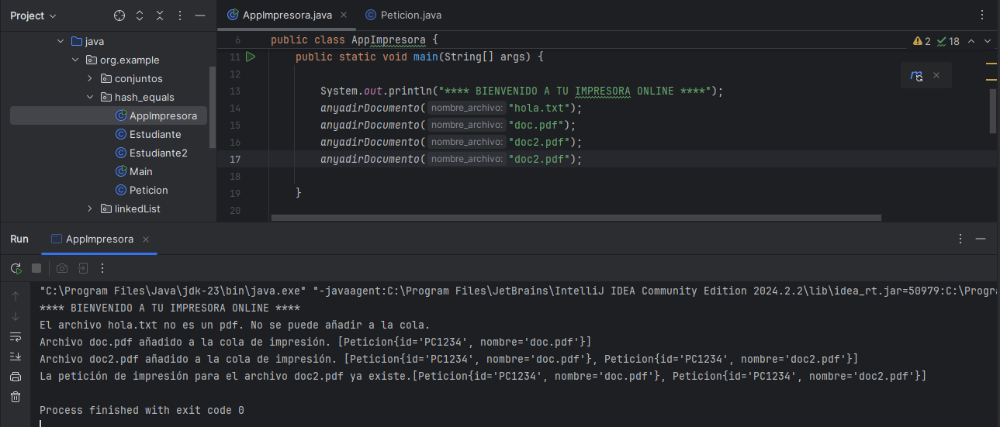
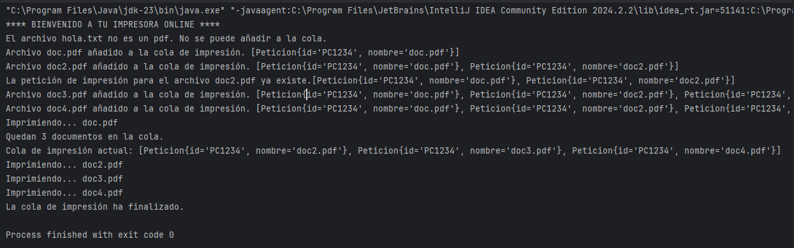

Ejercicio 1: impresora online
Implementa una clase Java para gestionar una impresora online, que puede recibir peticiones de impresión desde diferentes ordenadores.
Las peticiones serán impresas por orden de llegada. Cada Petición incluye la siguiente información:
- id de la máquina que solicita la impresión (por ejemplo, “PC3493”). Haz que sea constante para el usuario que ejecuta el programa.
- nombre del fichero a imprimir (por ejemplo, "file1.pdf"). Al crear una nueva petición, se debe comprobar que el formato del fichero es siempre .pdf. Si no tiene este formato, reportaremos un error y no se creará la petición. Usa el método nombreArchivo.endsWith(".pdf").
El programa debe implementar los siguientes métodos:
- añadirDocumento(): recibe una petición de impresión como entrada y la añade al conjunto de peticiones pendientes de imprimirse. En caso de que alguna petición pendiente ya contenga el archivo que se intenta imprimir (por id y nombre), no se insertará de nuevo y se informará al usuario de que la petición de impresión ya existe.
Ejemplo:

- imprimirDocumento(): coge la primera petición y muestra el nombre del fichero por consola (únicamente simula la impresión de la petición). La petición debe ser eliminada del conjunto de peticiones al finalizar.
- getNumPeticiones(): devuelve el número total de peticiones pendientes de imprimir.
- verTodo(): muestra todas las peticiones que no han sido impresas.
- imprimirTodo(): imprime todas las peticiones pendientes. Después de procesar cada petición, esta debe ser eliminada.
Escribe un main que incluya las llamadas necesarias para validar todos los métodos descritos anteriormente.
public static void main(String[] args) {
System.out.println("**** BIENVENIDO A TU IMPRESORA ONLINE ****");
anyadirDocumento("hola.txt");
anyadirDocumento("doc.pdf");
anyadirDocumento("doc2.pdf");
anyadirDocumento("doc2.pdf");
anyadirDocumento("doc3.pdf");
anyadirDocumento("doc4.pdf");
imprimirDocumento();
System.out.println("Quedan " + getNumPeticiones() + " documentos en la cola.");
verTodo();
imprimirTodo();
}